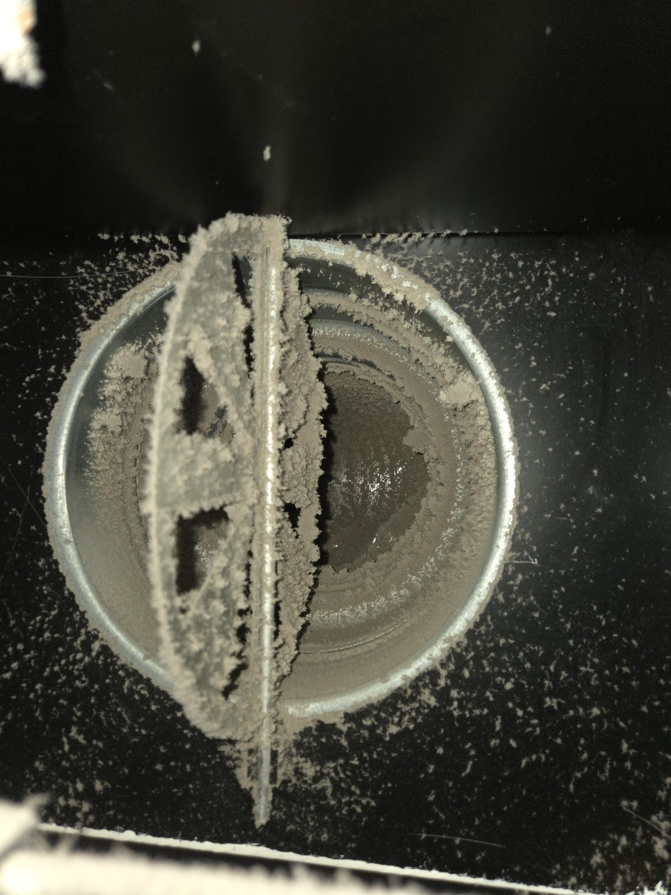
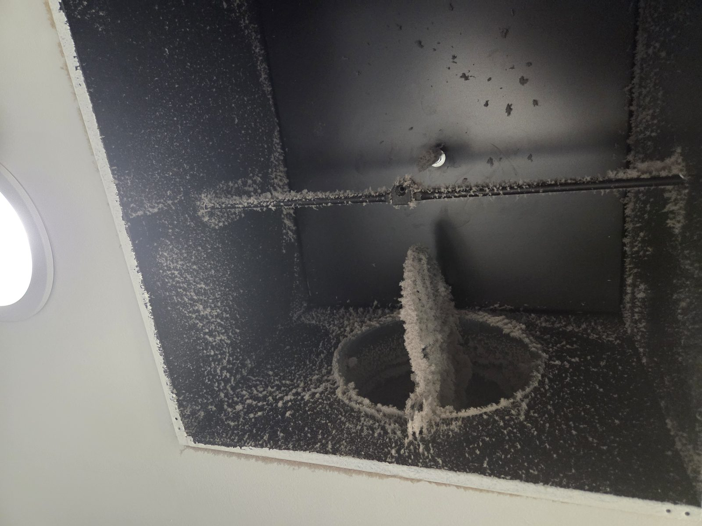
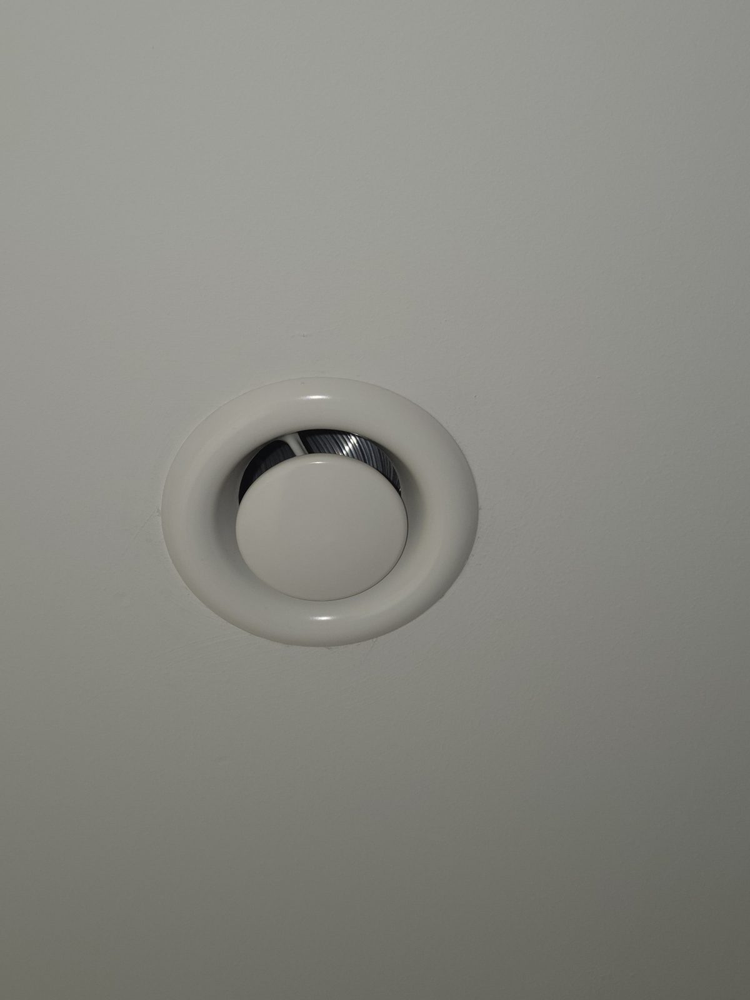
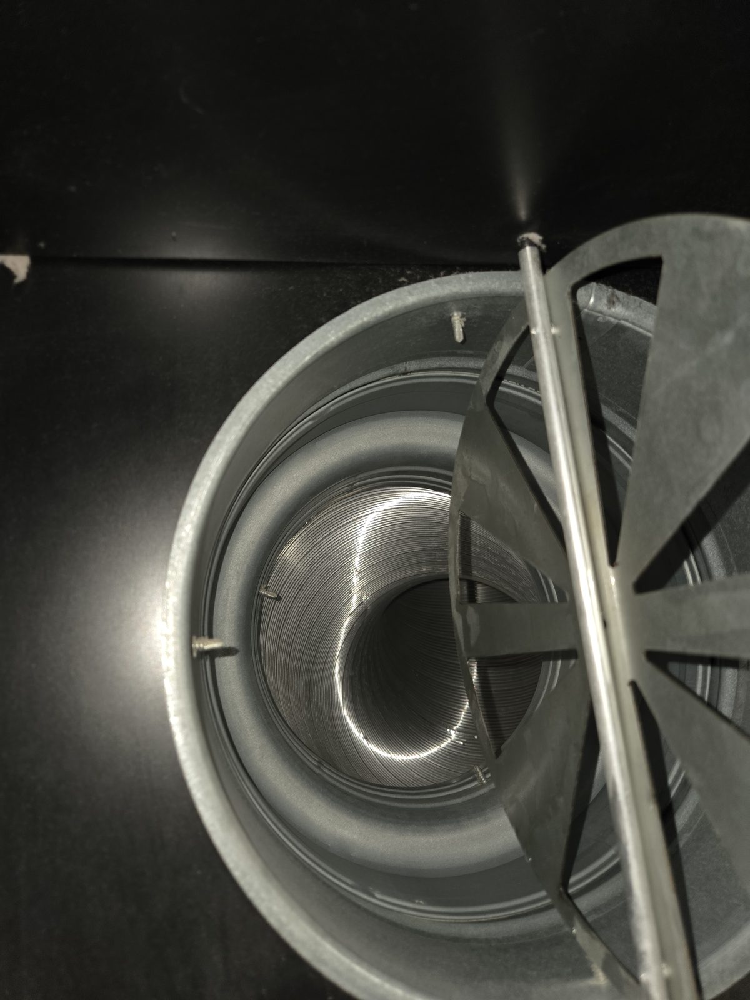
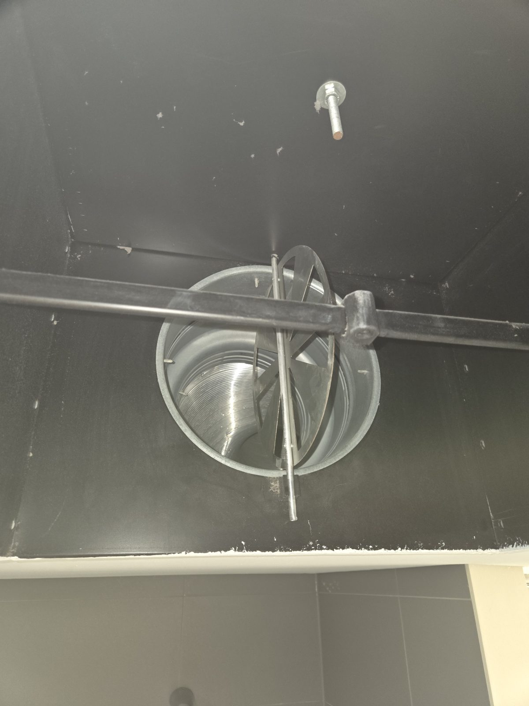

Vorher: Staubablagerung
Deutliche Staubablagerung im Lüftungskanal vor der Reinigung.
Deutliche Staubablagerung im Lüftungskanal vor der Reinigung.
Lüftungs- und RLT-Systeme bestehen aus vielen Komponenten und Luftleitungsabschnitten. KAANTEC unterstützt bei der Reinigung zugänglicher Bereiche und richtet den Leistungsumfang an Anlage, Nutzung und Aufgabenstellung aus.
Angebot anfragenAlle LeistungenDer Leistungsumfang richtet sich immer nach der jeweiligen Anlage, ihrer Nutzung und dem tatsächlichen Verschmutzungsbild. Typische Aufgaben im Bereich Lüftungsreinigung:
Anlage und Zugänge werden betrachtet, das Verschmutzungsbild erfasst und das Reinigungsverfahren abgestimmt. Bei Bedarf kann die Ausführung nachvollziehbar dokumentiert werden.
In Lüftungs- und RLT-Anlagen sammeln sich mit der Zeit Staub, Fette und mikrobiologische Ablagerungen – vor allem in Kanälen, an Ventilatoren und in Filterbereichen, die selten eingesehen werden. Das beeinträchtigt nicht nur die Luftqualität, sondern kann auch den Energieverbrauch erhöhen und die Lebensdauer der Anlage verkürzen. Für Unternehmen ist eine regelmäßige, nachvollziehbar dokumentierte Reinigung daher mehr als reine Kosmetik: Sie unterstützt ein gutes Raumklima, den technischen Werterhalt und – je nach Anlage – die Einhaltung einschlägiger Regelwerke wie VDI 6022.

Die folgenden Angaben dienen der groben Einordnung. Ob und in welchem Rhythmus eine Inspektion oder Reinigung angezeigt ist, hängt immer von der konkreten Anlage, ihrer Nutzung und den anwendbaren Vorgaben ab.
| Gebäude- / Anlagentyp | Typischer Inspektionsrhythmus* |
|---|---|
| Büro- und Verwaltungsgebäude mit RLT-Anlage | ca. alle 2 Jahre |
| Gewerbliche Küche / Küchenabluft | ca. jährlich |
| Produktions- und Industriehallen | abhängig von Prozessabluft und Belastung |
| Schulen, Kitas, öffentliche Gebäude | ca. alle 2 Jahre |
| Pflege- und Gesundheitseinrichtungen | häufiger, meist jährlich |
*Orientierungswerte ohne Anspruch auf Vollständigkeit. Maßgeblich sind stets die für Ihre Anlage geltenden Vorgaben und die Empfehlung Ihres Anlagenherstellers bzw. Betreibers.
Lüftungsanlagen unterscheiden sich stark je nach Branche und Nutzung. Wir stimmen Umfang und Vorgehen jeweils darauf ab.
RLT- und Abluftanlagen in Produktionsumgebungen, oft mit erhöhter Staub- oder Prozessbelastung.
Zentrale Lüftungsanlagen für ein gutes Raumklima und angenehme Arbeitsbedingungen.
Kombination aus Lüftungs- und Küchenabluftreinigung, siehe auch unsere Großküchenreinigung.
Weitere Objekte mit RLT-Anlagen, individuell nach Anlage und Aufgabenstellung.
Das hängt von Anlagentyp, Nutzung und Verschmutzungsgrad ab. Als Orientierung dienen u. a. die VDI 6022 sowie die Empfehlungen des Anlagenherstellers. Wir prüfen die Situation gerne unverbindlich vor Ort.
Die Kosten richten sich nach Anlagengröße, Zugänglichkeit, Verschmutzungsgrad und gewünschtem Leistungsumfang. Nach einer kurzen Einschätzung – telefonisch oder vor Ort – erhalten Sie ein transparentes Angebot ohne versteckte Kosten.
Nicht zwingend. Viele Arbeiten lassen sich mit Ihren Betriebszeiten abstimmen, teils auch außerhalb der regulären Arbeitszeit. Wir besprechen das im Vorfeld gemeinsam mit Ihnen.
Ja. Wir betreuen sowohl kleinere Anlagen in Büro- und Gewerbeeinheiten als auch größere RLT-Systeme in Industrie und Produktion.
Auf Wunsch dokumentieren wir den Zustand vor und nach der Reinigung nachvollziehbar, damit Sie die Unterlagen für interne Zwecke oder Nachweise griffbereit haben.
Die Bilder zeigen reale Anlagen und Reinigungsarbeiten und dienen der fachlichen Einordnung des jeweiligen Leistungsbereichs.




Bei RLT-Anlagen können je nach Anlage und Aufgabenstellung insbesondere VDI 6022 sowie VDI/ÖFR/SWKI 6022 Blatt 8 relevant sein. Welche Vorgaben im Einzelfall anzuwenden sind, hängt von der konkreten Anlage und Nutzung ab.
Beschreiben Sie kurz Ihre Anlage, den Bereich oder die Verschmutzung. Sie sprechen dabei direkt mit Ihrem festen Ansprechpartner – unverbindlich, ohne Vorabkosten und ohne Verkaufsdruck.